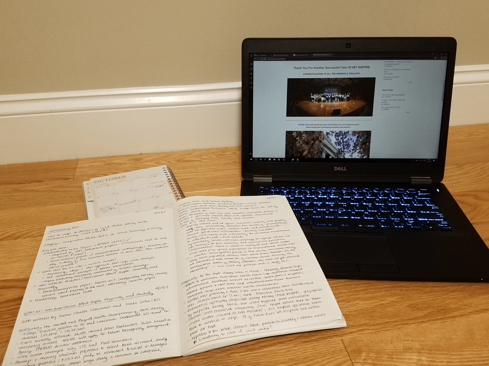
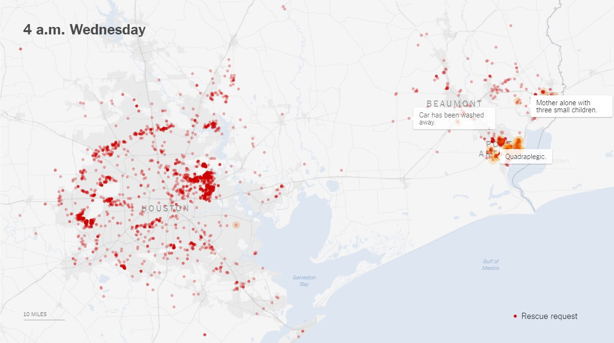

        <script src="../js/imagesloaded.js"></script>
        <script src="../js/packery.js"></script>

        <section id="container">
            <article>
                <div class="img-wrap">
                    

                    <div class="hover-text">
                        <h2>
                            <a href="posts/introduction">Introduction to the Project</a>
                        </h2>
                        <p class="brief">
                            Hi! As part of a project for INSPIRE, a national social sciences research competition held by the Massachusetts Institute of Technology, I’ll be analyzing social media content posted during recent hurricanes, particularly Hurricane Harvey. I have yet to work out the details, but I’ll share some of my ideas so far.
                        </p>
                    </div>
                </div>
            </article>

            <article>
                <div class="img-wrap">
                    
                    <div class="hover-text pre-active">
                        <h2>Example 1</h2>
                        <p class="brief">Last summer, I interned with <a href="https://hugroup.seas.harvard.edu">Evelyn Hu's</a> lab at <b>Harvard University</b>, conducting lab experiments and simulations of nanoscale semiconductor lasers and their electronic band structures.</p>
                    </div>
                </div>
            </article>

            <article>
                <div class="img-wrap">
                    
                    <div class="hover-text">
                        <h2>Example 2</h2>
                        <p class="brief">Last summer, I interned with <a href="https://hugroup.seas.harvard.edu">Evelyn Hu's</a> lab at <b>Harvard University</b>, conducting lab experiments and simulations of nanoscale semiconductor lasers and their electronic band structures.</p>
                    </div>
                </div>
            </article>
        </section>

        <script>
            var imgLoad = new imagesLoaded( document.querySelector('#container'), function( instance) {
                    new Packery( '#container', {
                        itemSelector: 'article'
                    });
            });
        </script>